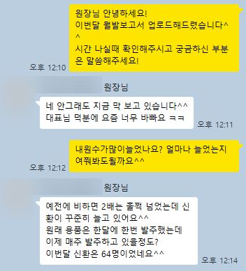
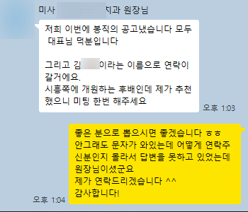

유튜브를 보고 온 신환이
패키지를 결제했습니다.
결제한 패키지 금액300만 원
“처음에 이야기하셨던 것들이 실제로
벌어지고 있어 신기합니다”

플로우애즈를 만난 후
“처음에 이야기하셨던 것들이 실제로
벌어지고 있어 신기합니다”
“대표님 덕분에
요즘 너무 바빠요”

“저희 이번에 봉직의 공고냈습니다 모두 대표님 덕분입니다”

“200평 조금 넘습니다”
“저희 책임지셔야 해요!”

환자에게 전할 진료 방식과 강점.
목표 환자층과 그들이 궁금해할 질문.
환자의 증상·치료 질문에 답합니다.
원장님의 진료 기준과 접근 방식을 설명합니다.

안녕하세요.
플로우애즈 대표 이민재입니다.
저는 11년 동안 마케팅을 해왔습니다.지금은 20여 곳의 병의원과 전문직의
콘텐츠 마케팅을 담당하는 플로우애즈의 대표입니다.
제가 영상을 기획할 때 먼저 보는 것은
화려한 편집이나 조회수가 아닙니다.
이 영상을 보는 사람은 무엇을 원하는가.
어떤 설명이 우리 병원을
찾아오고 싶게 만드는가.
제가 영상 기획에서 먼저 고민하는 질문입니다.
잠깐만 생각해 보세요.
원장님은 지금
조회수를 위한 유튜브를 하고 계신가요?
매출을 위한 유튜브를 하고 계신가요?
우리 병원을 선택할 이유, 목표 환자층, 영상 2편의 주제와 질문·답변 구성을 담은 마케팅 진단 리포트입니다. 완성된 영상 파일이 아니라 촬영에 앞서 방향을 정하는 기획 자료입니다.
아닙니다. 리포트는 무료이며 대행 계약 의무가 없습니다. 내용을 확인한 뒤 병원에 필요한 방향인지 판단하시면 됩니다.
네. 채널이 없어도 신청할 수 있습니다. 이미 운영 중이라면 채널 주소를 함께 알려주세요. 병원의 진료 강점과 실제 환자 질문을 바탕으로 기획합니다.
평균 5영업일 내 신청하신 이메일로 보내드립니다. 대표가 직접 내용을 검토하고 작성합니다.
원고를 먼저 기획한 뒤 원장님에게 의학적 내용과 실제 진료에 맞는지 확인받습니다. 베이직은 직접 촬영, 프리미엄은 전문 감독 촬영을 포함합니다. 완성 영상도 확인받은 뒤 업로드합니다.
베이직은 월 320만 원, 프리미엄은 월 400만 원이며 부가세는 별도입니다. 월 롱폼 4편·숏폼 10편의 기획과 편집, 업로드·채널 관리, 월간 리포트를 제공합니다. 무료 진단 리포트 신청에는 비용이 들지 않습니다.
채널과 제작된 영상의 소유권은 고객에게 있습니다. 계약 기간과 세부 조건은 진단 리포트와 함께 안내해 드립니다.
조회수·문의·환자 수는 보장하지 않습니다. 병원의 상황과 시청 반응, 실제 문의 기록을 살피며 기획을 보완합니다.
1 / 3
신청 완료
리포트는 평균 5영업일 안에 메일로 보내드립니다.
답변은 선택입니다. 알려주신 내용을 영상 기획에 반영합니다.
환자 이름이나 개인 진료기록은 적지 마세요.
지금 답하기 어려우시면 추가 질문은 건너뛰셔도 됩니다.